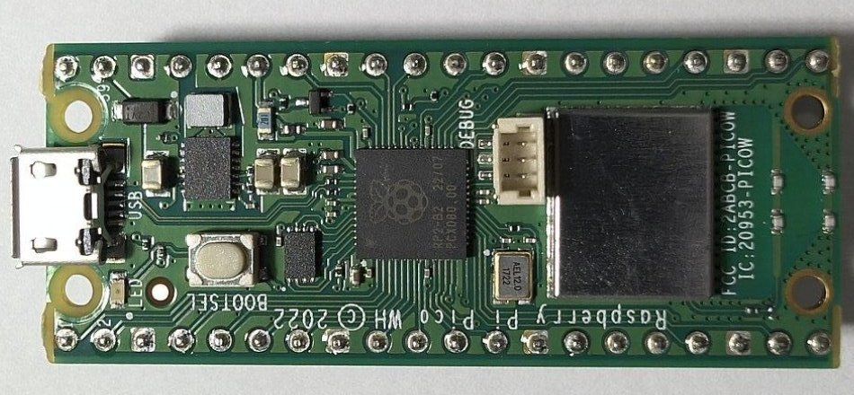
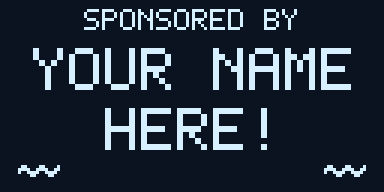

A smart worm bin
Red wigglers turn our cafeteria's food scraps into castings, the rich compost gardeners call black gold. Sensors tell us how the worms are doing, around the clock.
1 · Feed
Cafeteria scraps and shredded paper go in. Worms eat, wiggle and leave castings.
2 · Sense
Sensors read the bin twice a second. A screen on the lid shows them.
3 · Share
Every minute, Wi-Fi carries the readings to a website anyone can open.
- Air temperature
- Humidity
- Air pressure
- Soil temperature
- Soil moisture
- Bedding level
- Light (coming)
- Sound (coming)

The brain: a Raspberry Pi Pico



Every bin, every reading, updated every minute. Open it on your phone right now.
Let's talk!
Ms. Audra Thomas
Woodstock High School
or ask any of our students
A vermiculture project-based learning program at Woodstock High School, with Maker Lab Kids.

Sponsor
a Bin!
Help Woodstock High students turn cafeteria scraps into real science.
Name a bin, cheer on a team, and watch the science happen live.
WOODSTOCKHIGH SCHOOL